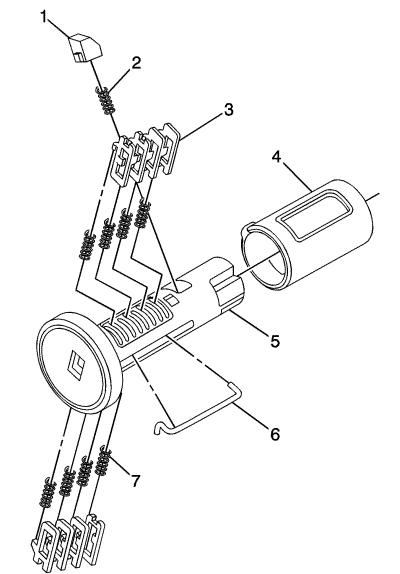

Codificación del cilindro de cierre - Encendido

El cilindro de la cerradura de encendido usa 8 posiciones de corte de llave,1-8. Los tumbadores de la cerradura de encendido (3) están situados en los lados opuestos del cilindro (5). No encajan y no se auto-retienen. Siguen el código de llave con el primer tumbador siendo la primera profundidad del código de llave, la que está más cerca de la cabeza de la llave.
Nota: Todos los cilindros de cierre para llaves serradas lateralmente tienen tumbadores a la izquierda y a la derecha. La ubicación de los dientes del tumbador determina si es de derecha o de izquierda. Las ilustraciones de este procedimiento muestran los tumbadores derechos en la parte superior y los tumbadores izquierdos en la parte inferior. Todos los tumbadores están marcados con 1R, 1L, 2R o 2L. El número representa la profundidad del corte y la letra significa derecha (R) o izquierda (L).
- Soporte el conjunto del cilindro de encendido (5) de forma que el lado con la cavidad de muelle del tumbador situada más cerca de la cabeza del cilindro esté boca arriba.
- Inserte el muelle de tumbador (7) en cada una de las 4 cavidades de muelle del conjunto del cilindro. Este lado del cilindro usó tumbadores izquierdos.
- El primer tumbador (3) que se carga será la primera posición de corte de llave, que es el primer número en el código de llave. Monte el tumbador en la ranura sobre el muelle. Monte los demás tumbadores derechos siguiendo el código de llave y el mismo proceso, empujando los tumbadores hasta que estén bien colocados en su lugar.
- Gire el conjunto del cilindro. Inserte el muelle de tumbador en cada una de las cavidades de muelle del conjunto del cilindro. Este lado del cilindro usó tumbadores derechos.
- El primer tumbador (3) que se carga será la segunda posición de corte de llave, el segundo número en el código de llave. Monte el primer tumbador en la ranura sobre el muelle. Monte los demás tumbadores izquierdos siguiendo el código de llave y el mismo proceso, empujando los tumbadores hasta que estén bien colocados en su lugar.
- Compruebe si los cargadores se han cargado correctamente insertando la llave en el cilindro. Todos los tumbadores deben bajar al nivel del diámetro del cuerpo del cilindro de cierre.
- Con la llave en el conjunto del cilindro inserte el conector redondo (6), inserte el muelle del seguro (2) en la ranura del seguro situada en el conjunto del cilindro. Inserte el seguro (1) alineándolo en la ranura sobre el muelle. Empuja y mantenga oprimido el seguro.
- Inserte el cilindro en el casquillo (4) como se muestra en la imagen. Asegúrese de que el actuador está bien situado en el cilindro.
- Cuando se retira la llave, la cerradura debe permanecer junta.
- Lubrique ligeramente la superficie exterior del área de los tumbadores en el cuerpo de la cerradura y bajo la ranura de la llave usando la grasa suministrada. Inserte y extraiga la llave 5 veces para lubricar el paso de llave.
- Inserte la llave y haga funcionar la cerradura 3 veces para distribuir la grasa por el interior del casquillo.
- Verifique la posición de la llave insertando la cerradura en la columna.
| © Copyright Chevrolet Europe. All rights reserved |